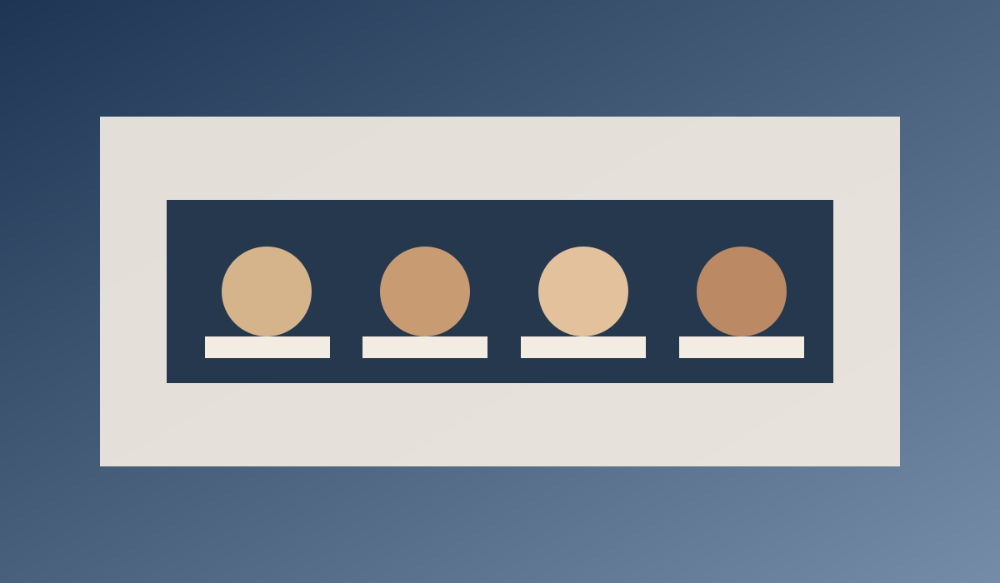
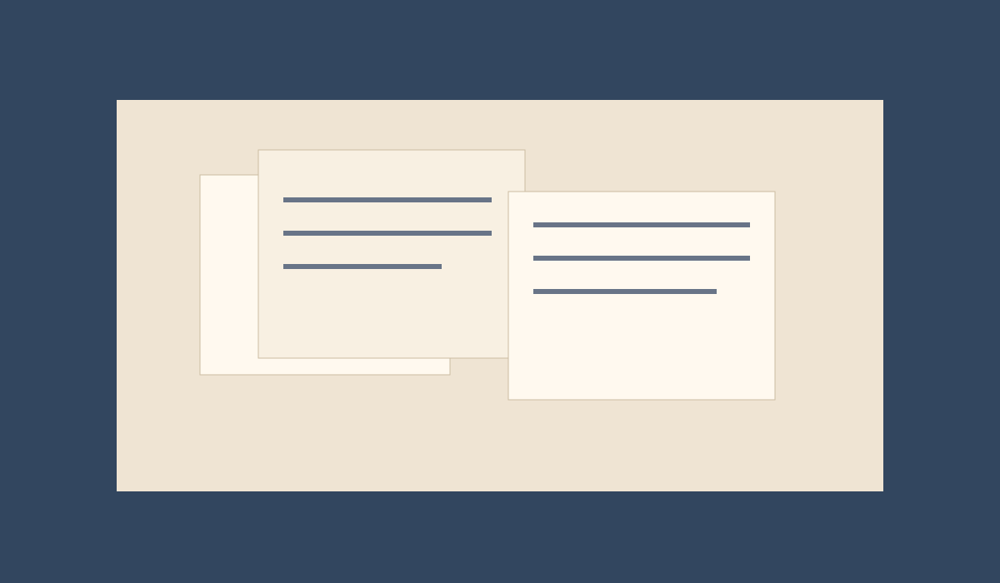

Intervjuu: noorte toimetajate uus laine Berliinis
Vabatahtlikud loovad kahe keele vahel uut formaati, mis hoiab alles ajaloo, kuid loeb nagu tänane ajaleht.
Toimetuse valik
Eesti Rada avab uue digitaalse rubriigiseeria, kus perekondlikud mälestused, kohalikud algatused ja Euroopa linnades elav eestlus kohtuvad kaasaegses vormis.

Vabatahtlikud loovad kahe keele vahel uut formaati, mis hoiab alles ajaloo, kuid loeb nagu tänane ajaleht.
Rubriik koondab ET/DE sündmused, kus lugejad saavad saata oma piirkonna teateid.
Toimetus digitaliseeris seni avaldamata pildirea ning lisas taustalood peredelt.
Kontserdid, keeled ja loovisikud diasporaas.

Perekondlikud arhiivid ja ühismälu kaardistused.
Kogukond
Kohalikud ühendused, koorid ja noortegrupid saavad saata oma piirkonna loo otse toimetusele.